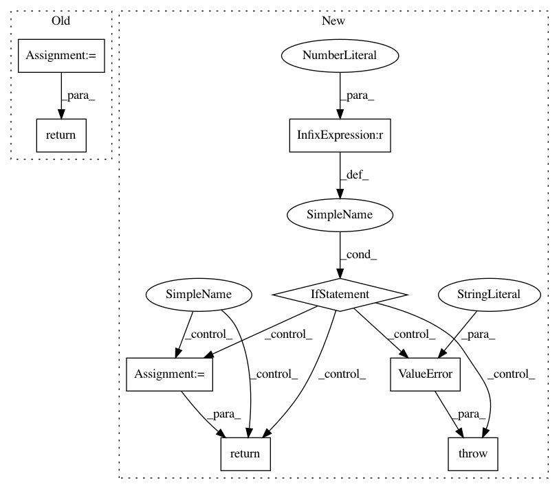

58f4620699ac8e8eecbc0746dfcc8a497f01d6ba,tensorlayer/activation.py,,leaky_relu,#Any#Any#Any#,42
Before Change
// x = tf.nn.relu(x)
// m_x = tf.nn.relu(-x)
// x -= alpha * m_x
x = tf.maximum(x, alpha * x, name=name)
return x
def swish(x, name="swish"):
Swish function.
After Change
if not (0 < alpha <= 1):
raise ValueError("`alpha` value must be in [0, 1]`")
with tf.name_scope(name, "leaky_relu") as name_scope:
x = tf.convert_to_tensor(x, name="features")
return tf.maximum(x, alpha * x, name=name_scope)
def leaky_relu6(x, alpha=0.2, name="leaky_relu6"):
:func:`leaky_relu6` can be used through its shortcut: :func:`tl.act.lrelu6`.
This activation function is a modified version :func:`leaky_relu` introduced by the following paper:
`Rectifier Nonlinearities Improve Neural Network Acoustic Models [A. L. Maas et al., 2013] <https://ai.stanford.edu/~amaas/papers/relu_hybrid_icml2013_final.pdf>`__
This activation function also follows the behaviour of the activation function :func:`tf.nn.relu6` introduced by the following paper:
`Convolutional Deep Belief Networks on CIFAR-10 [A. Krizhevsky, 2010] <http://www.cs.utoronto.ca/~kriz/conv-cifar10-aug2010.pdf>`__
The function return the following results:
- When x < 0: ``f(x) = alpha_low * x``.
- When x in [0, 6]: ``f(x) = x``.
- When x > 6: ``f(x) = 6``.
Parameters
----------
x : Tensor
Support input type ``float``, ``double``, ``int32``, ``int64``, ``uint8``, ``int16``, or ``int8``.
alpha : float
Slope.
name : str
The function name (optional).
Examples
--------
>>> import tensorlayer as tl
>>> net = tl.layers.DenseLayer(net, 100, act=lambda x : tl.act.leaky_relu6(x, 0.2), name="dense")
Returns
-------
Tensor
A ``Tensor`` in the same type as ``x``.
References
----------
- `Rectifier Nonlinearities Improve Neural Network Acoustic Models [A. L. Maas et al., 2013] <https://ai.stanford.edu/~amaas/papers/relu_hybrid_icml2013_final.pdf>`__
- `Convolutional Deep Belief Networks on CIFAR-10 [A. Krizhevsky, 2010] <http://www.cs.utoronto.ca/~kriz/conv-cifar10-aug2010.pdf>`__
if not (0 < alpha <= 1):
raise ValueError("`alpha` value must be in [0, 1]`")
with tf.name_scope(name, "leaky_relu6") as name_scope:
x = tf.convert_to_tensor(x, name="features")
return tf.minimum(tf.maximum(x, alpha * x), 6, name=name_scope)
def leaky_twice_relu6(x, alpha_low=0.2, alpha_high=0.2, name="leaky_relu6"):
:func:`leaky_twice_relu6` can be used through its shortcut: :func:`:func:`tl.act.ltrelu6`.
This activation function is a modified version :func:`leaky_relu` introduced by the following paper:
In pattern: SUPERPATTERN
Frequency: 3
Non-data size: 8
Instances
Project Name: tensorlayer/tensorlayer
Commit Name: 58f4620699ac8e8eecbc0746dfcc8a497f01d6ba
Time: 2018-06-08
Author: contact@jonathandekhtiar.eu
File Name: tensorlayer/activation.py
Class Name:
Method Name: leaky_relu
Project Name: analysiscenter/batchflow
Commit Name: e0df81789b43a95c32a8aa9e6ce64baba216c5fe
Time: 2017-12-15
Author: g.ivanov@analysiscenter.ru
File Name: dataset/batch_image.py
Class Name: BaseImagesBatch
Method Name: rotate
Project Name: biolab/orange3
Commit Name: d2cc0fb493b359fcbcd25410d1ddfe50954766aa
Time: 2013-06-03
Author: jure.zbontar@gmail.com
File Name: Orange/classification/linear_regression.py
Class Name: LinearRegressionLearner
Method Name: fit